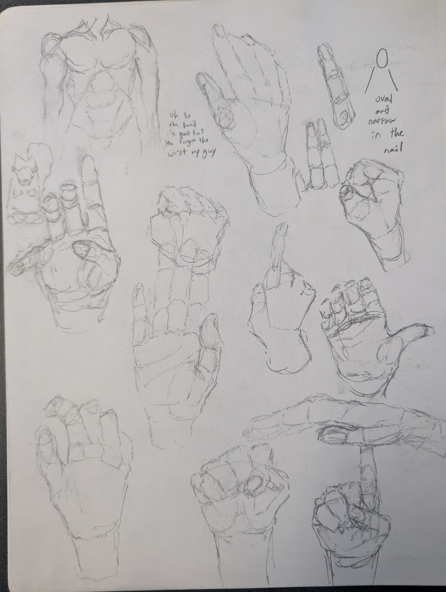
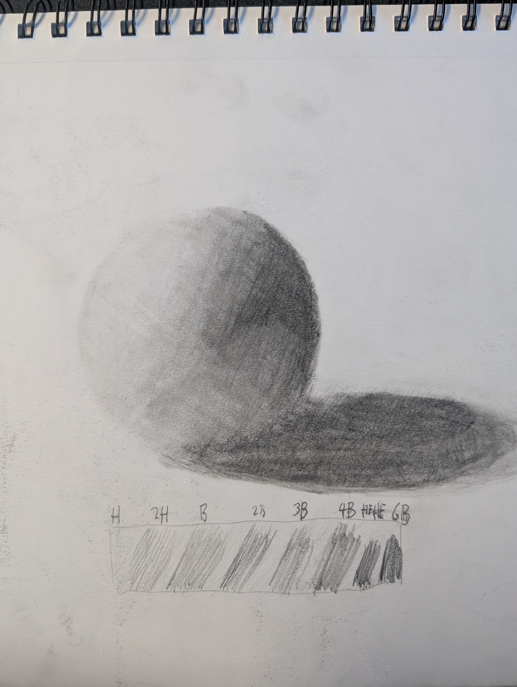
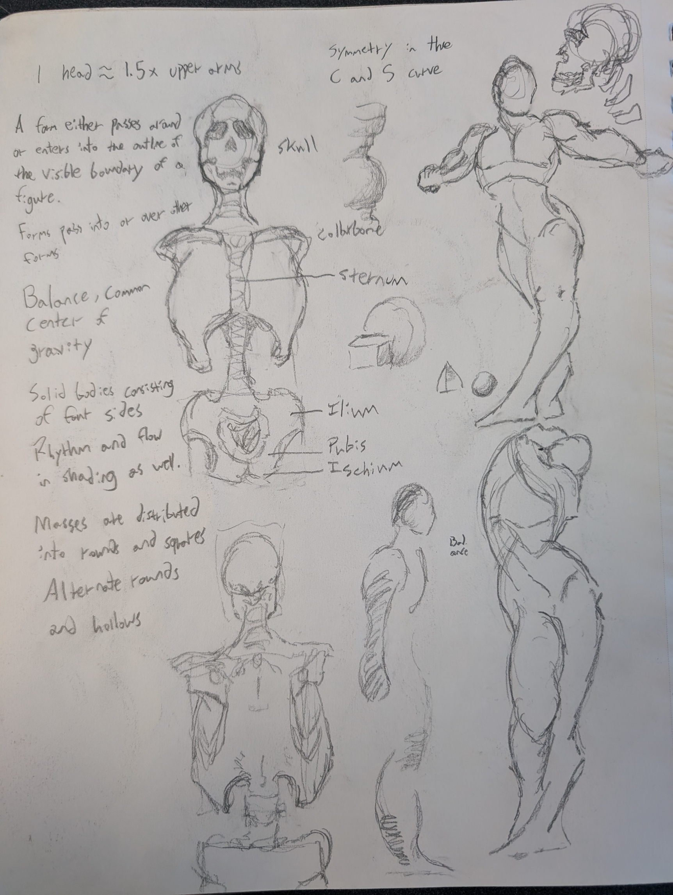

Sketches
Artists are often known by their finished projects, the works they put the most time and effort into. I think if you really want to know an artist, you need to see their sketchbook. A finished project is merely one snapshot of an artist's entire career, while a sketchbook will show you months of snapshots.
Hand form studies

Value and lighting study

Faces
Studies of George Bridgman Drawings
